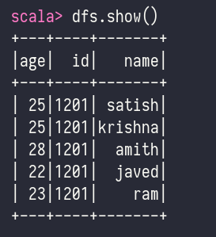
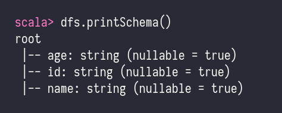

Spark#
spark fundamentals#
- Todays Lecture link - https://youtu.be/A_c9Vfnnqzc
- intro
- fast general purpose distributed computing platform
- spark make efficient use of memory and can execute equivalent job 10 to 100 times faster than hadoops mapreduce
- spark creators managed to abstract the fact that one is working with a cluster of machines and instead seem as if working with a set of collections-based API's
- def.
- spark is a unified computing engine and is a set of libraries for parallel data processing on computer clusters
- it supports widely used programming languages - py, java, scala, r
- sql to streaming ml
- run from laptop to multiple clusters
- easy system to start with and scale-up to big data processing or large scale
- meaning
- unified - it supports wider range of data analytics tasks
- simple data loading
- sql queries
- machine learning and streaming computation
- computing engine
- spark handles loading data form storage systems and performing computation on it
- not permanent storage as the end itself
- libraries
- unified api to common data analytics tasks
- spark sql - sql
- mllib - ml
- spark streaming - stream processing
- graphX - graph analytics
- history
- uc berkely - 2009
bigdata - hadoop - toolkit#
- Todays Lecture Link - https://youtu.be/dc8tn7A6VxI
- bigdata
- 4 v
- volume
- variety
- velocity
- veracity
- usually unstructured and qualitative in nature
-
new data challenge that requires leveraging existing systems differently
-
hadoop vs spark
- performance
- H - slow, use disk for storage and depends on disk read and write speed
- S - fast, in memory performance with reduced disk reading and writing operations
- cost
- H - open source - less expensive to run, use affordable consumer hardware, easy to find trained hadoop professional
- S - open source, relies on memory consumption - increase cost
- data processing
- H - batch processing, use mapreduce to split large dataset across cluster for parallel analysis
- S - for iterative live stream data analysis - works with RDD and DAG to run operations
- fault tolerance
- H - highly fault tolerance - replicates the data across nodes and uses them in case of an issue
- S - tracks RDD block creation process, and then it can rebuild a dataset when a partition falls. can also use DAG to rebuild data across nodes
- scalability
- H - easily scalable by adding nodes and disks for storage. supports tens of thousands of nodes without a known limit
- S - bit more challenging to scale because it relies on RAM for computations. Support thousands of nodes in a cluster
- security
- H - secure support LDAP, ACLa, Kebros,SLA, etc
- S - not secure. default tuned off. relies on integration with hadoop to achieve necessary security level
- ease of use and language support
- H - difficult - less supported languages - use java python mapreduce
- S - more user friendly - allows interactive shell integration mode, API can be written in java, scala, r, python , spark sql
- machine learning
- H - slower than spark, data fragments, can be too large and create bottleneck. mahout is the main library
- S - much faster with in memory processing. uses mllib for computations
-
scheduling and resource management
- H - use external solutions. YARN is the most common option. oozle is available for workflow scheduling.
- S - has built in tools for resource allocation, scheduled and monitoring
-
code sample hadoop vs spark
- hadoop mapreduce
- main class
- mapper class
- reducer class
-
spark
- one main class
-
spark toolkit
- upper level
- structure streaming
- advance analytics
- libraries and ecosystems
- Structured apis
- datasets
- dataframes
- sql
- low level API
- RDD
- distributed variables
spark ecosystem#
-
Todays Lecture Link : https://youtu.be/nM-ikb7JXaM
-
features
- open source cluster computing framework for real time data processing
- in memory cluster computing that increases the processing speed of an application
- provides an interface for programming entire cluster with implicit data parallelism and fault tolerance
- designed to cover wide range of workloads such as batch applications, iterative query and streaming
- speed - 100 time faster than hadoop mapreduce for large scale data processing
- powerful caching - powerful caching and disk persistence capabilities
- deployment - it can be deployed through mesos, hadoop via YARN, or sparks's own cluster manager
- realtime - real time computation and low latency because of in memory computation
- polyglot - provides high level api in java scala python r
- scalable
- ecosystem
- Spark Core
- basic engine for large scale parallel and distributed data processing
- memory management
- fault recovery
- scheduling
- distributed and monitoring jobs on cluster
- Spark Streaming
- process real time streaming data
- useful addition to core Spark API
- enables high throughput and fault tolerance stream processing
- Spark SQL
- integrates relational processing with Spark functional programming API
- supports querying data either vai SQL or via Hive query language
- Spark GraphX
- for graph and graph parallel computation
- extends spark RDD with resilient distributed property Graph
- at high-level, GraphX extends the Spark RDD abstraction by introducing the Resilient Distributed Property Graph (a directed multigraph with properties attached to each vertex and edge.)
- Spark MLlib
- machine learning
- SparkR
- r package that provides a distributed data frame implementation
- supports selection, filtering, aggregation, on large scales
spark architecture#
-
Todays Lecture Link : https://youtu.be/HiKnXwmoTLg
-
layered architecture
- all spark components are loosely coupled
- based on two main abstractions
- Resilient Distributed Dataset (RDD)
-
Directed Acyclic Graph (DAG)
-
RDD
- building block of spark applications
- Resilient - fault tolerance and is capable of rebuilding on failure
- Distributed - distributed data among the multiple nodes in cluster
- Dataset - Collection of partitioned data with values
- it is a layer of abstracted data over the distributed collection.
- it is immutable in nature and follow lazy transformations.
- immutability means that the state can't be modified later on,
transformation is possible

- block diagram

- master node
- driver program
- if using interactive shell it behaves as driver program
- spark context
- gateway to all spark functionalities
- similar to database connection
- any command you execute in your database goes through the database connection
- likewise anything you do on spark goes through spark context
- cluster manager
- spark context works with cluster manager to manage various jobs
- the driver program and spark context takes care of the job execution within the cluster.
- a job is split into multiple tasks which is distributed over the worker node.
- anytime a RDD is created in Spark context,
- it can be distributed over the various nodes and can be cached there
- worker nodes
- are slave nodes whose jobs is to execute the tasks
-
these tasks are them executed on the partitioned RDDs in the worker node and hence
return the result back to the Spark Content. -
spark context take the job and breaks the job in task and distribute them to the worker nodes
- these tasks work on the partitioned RDD, performs operations, collect these results and return to the main Spark Context
- if you increase the number of workers, then you can divide jobs into more partitions and execute them parallely over multiple multiple systems. it will be a lot faster
- with the increase in the number of workers, memory size will also increase and you can cache the jobs to execute it faster
assignment 1#
- why apache spark is so popular for real world application development?
- fast for huge amount of data
- many high level api available
- many programming language support
- write a short note of RDDs, explain its workflow using block diagram
- what are the operations one can perform on RDDs
Using PySpark to perform Transformations and Actions on RDD#
- Small Hands-on Exercise - https://www.analyticsvidhya.com/blog/2016/10/using-pyspark-to-perform-transformations-and-actions-on-rdd/
real world use cases#
-
Todays Lecture Link - https://youtu.be/_iF-xOkhcB8 Topic - Apache Spark Real World Use Cases/Applications
-
alibaba, yahoo, google, facebook , netflix use spark
- speed is core attraction of spark
-
offer many interactive api in multiple languages including scala, java, python, and R
-
why spark is popular
- favorite among developer as it allows them to write applications in java, scala, python
- backed by adn active developer community, and is also supported by a dedicated company - databricks
- although majority of spark application use HDFS as the underlying data file storage, it is also
compatible with data sources like Cassndra, MySQL, AWS S3 - developed on top of hadoop ecosystem that allows for east and fast development
-
increase in big data
-
applications
- processing streaming data
- with so much data being processed it become essential for companies to stream and analyze data in real time
- spark streaming unifies disparate data processing capabilities allowing developers to use single framework to accommodate all there processing needs
- general ways that spark streaming is being used by business today are
- streaming STL
- data enrichment
- trigger event detection
- complex session analysis
- machine learning
- MLlib
- MLlib works in areas such as clustering, classification, and dimensionality reduction
- very common big data functions like predictive intelligence, customer segmentation for marketing purposes and sentiment analysis
- fog computing
- bigdata + iot -
- fog computing decentralizes data processing and storage, instead performing those function on edge of network
- However, Fog computing brings new complexities to processing decentralized data,
because it increasingly requires low latency, massively parallel processing of machine
learning, and extremely complex graph analytics algorithms. - Fortunately, with key stack components such as Spark Streaming, an interactive real-time
query tool (Shark), a machine learning library (MLib), and a graph analysis engine
(Graphx), Spark more than qualifies as a fog computing solution. - In fact, as the loT industry gradually and inevitably converges, many industry experts
predict that compared to other open source platforms Spark has the potential to
emerge as the de facto fog infrastructure.
- interactive analysis
- MapReduce was built to handle batch processing and SQL on hadoop engines such as Hive or Pig but too slow for interactive analysis
- apache spark is fast enough to perform exploratory queries without sampling
#
- Todays Lecture Link - https://youtu.be/sEsmikgwjuk Spark in the Real World Usecase
spark api components#
-
Todays Lecture Link - https://youtu.be/aBC7tAVOlxU Topic - Unit 02 Introduction to Spark API Components The SparkSession
-
api - application programming interfaces
- helps to provide similar performance in all languages
- language API
- scala
- java
- python
- sql
-
r - spark
-
SparkSession
- we can control spark application through a driver process called the SparkSession
- SparkSession instance is the way Spark executes user-defined manipulations across the clusters
- one to one correspondence between a SparkSession and a SparkApplication
- SparkSession object is available to the user, which is the entrance point to the spark code
- python, r that spark translates into code that it can ron on executor jvm
data frames#
- Todays Lecture Link - https://youtu.be/jSxSINI8eAs Topic - Introduction to Data Frames
-
Lecture Link - https://youtu.be/-INpG8PGKEw Topic - Apache Spark Hands On Session
-
A DataFrame is a distributed collection of data, which is organized into named columns.
- Conceptually, it is equivalent to relational tables with good optimization techniques.
-
A DataFrame can be constructed from an array of different sources such as
Hive tables, Structured Data files, external databases, or existing RDDs. -
Features of data frame
- Ability to process the data in the size of Kilobytes to Petabytes on a single node cluster to large cluster.
- Supports different data formats (Avro, csv, elastic search, and Cassandra) and storage systems (HOFS, HIVE tables, mysql, etc).
- State of art optimization and code generation through the Spark SQL Catalyst optimizer (tree transformation framework).
- Can be easily integrated with all Big Data tools and frameworks via Spark-Core.
-
Provides API for Python, Java, Scala, and R Programming.
-
SQLContext
- SQLContext is a class and is used for initializing the functionalities of Spark SQL.
- SparkContext class object (sc) is required for initializing SALContext class object.
- The following command is used for initializing the SparkContext through spark-shell.
spark-shell
- By default, the SparkContext object is initialized with the name
scwhen the spark-shell starts. - Use the following command to create
SQLContext.scala> val sqlcontext = new org.apache.spark.sql.SQLContext(sc)
employee.json - note that records are separated by line (it is not a normal json file)
{"id": "1201", "name": "satish", "age": "25"}
{"id": "1201", "name": "krishna", "age": "25"}
{"id": "1201", "name": "amith", "age": "28"}
{"id": "1201", "name": "javed", "age": "22"}
{"id": "1201", "name": "ram", "age": "23"}
- Follow the steps given below to perform DataFrame operations
- Read the JSON Document
- First, we have to read the JSON document. Based on this, generate a DataFrame named (dfs).
- Use the following command to read the JSON document named employee,json.
- The data is shown as a table with the fields ~ id, name, and age.
scala> val dfs = sqlcontext.read.json("employee.json")- Output - The field names are taken automatically from employee.json.`
dfs: org.apache.spark.sql.DataFrame = [age: string, id: string, name: string]
- Show the Data
- If you want to see the data in the DataFrame, then use the following command.
scala> df.show()- Output - You can see the employee data in a tabular format.
- 
- Use printSchema Method
scala> dfs.printSchema()- 
- use select method
dfs.select("name").show()
- use filter
dfs.filter(dfs("age") > 23).show()
- use groupby method
dfs.groupBy("age").count().show()
spark-shell // will create a sc variable itself
val sqlcontext = new org.apache.spark.sql.SQLContext(sc)
val dfs = sqlcontext.read.json("employee.json")
df.show()
dfs.printSchema()
dfs.select("name").show()
dfs.filter(dfs("age") > 23).show()
dfs.groupBy("age").count().show()
dataframes, partitions#
-
Lecture Link - https://youtu.be/0RF4WPU0Pdc Topic - Dataframes, Partitions
-
A DataFrame is the most common Structured API and simply represents a table of data with rows and columns.
- This list that defines the columns and the types within those columns is called schema.
- The reason to distribute data is
- the data is too large to fit on one machine
-
it will take long time to perform that computation on one machine
-
Partitions
- To allow every executor to perform work in parallel, Spark breaks up the data into chunks called partitions.
- A partition is a collection of rows that sit on one physical machine in your cluster.
- A DataFrame's partitions represent how the data is physically distributed across
the cluster of machines during execution. - lf you have one partition, Spark will have a parallelism of only one, even if you have thousands of executors.
-
If you have many partitions but only one executors, Spark will still have a parallelism of only one
because there is only one computation resource. -
Transformations
- core data structure is immutable, meaning they cannot be changed after they're created
- to use data it is transformed
structured API overview#
- The Structured APIs are a tool for manipulating all sorts of data, from unstructured log files to
semi-structured CSV files and highly structured Parquet files. - these api refers to three core types of distributed collection API's:
- datasets
- data frames
-
SQL tables views
-
Spark has two notions of structured collections
- DataFrames
- Datasets
- Spark uses an engine called Catalyst that maintains its own type of information through the planning and
processing of work - In doing so, this opens up a wide variety of execution optimizations that make significant differences
- Spark types map directly to the different language APIs that spark maintains and there exist a lookup table
for each of these in Scala, java ,python , sql, r - Even if we use spark's structured APIs form python or R, the majority of manipulations will operate strickly on spark types, not python types
val df = spark.range(500).toDF("number")
df.select(df.col("number")+10)
df = spark.range(500).toDF("number")
df.select(df["number"] + 10)
Introduction to Datasets#
- Datasets in Apache Spark are an extension of DataFrame API.
- It provides type-safe, object-oriented programming interface.
- Dataset takes advantage of Spark's Catalyst optimizer by exposing expressions and data fields to a query planner.
- Spark introduced Dataset in Spark 1.6 release.